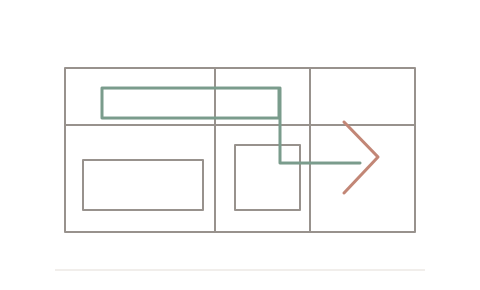
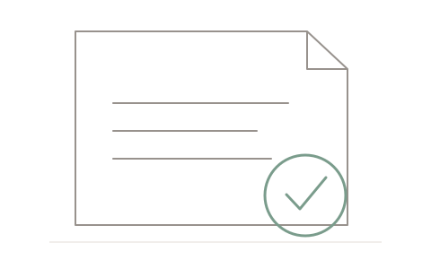

BAMBU / WHAT WE DELIVER
Good ideas.
Well delivered.
Every workspace starts with a different brief. Our services connect early thinking, technical design, fit-out and the details that make a space work once people move in.
Explore our six servicesOUR SERVICES / SIX CONNECTED DISCIPLINES
The right expertise.
At the right stage.
Select a service to explore how we approach the practical choices, technical details and delivery requirements behind it.
Strategy & Design
Build the brief around the people, building and budget. Explore test fits, workspace planning and coordinated technical design.
Commercial Fit-Out
Convert an agreed design into a functioning workplace, with coordinated trades, quality control and programme management.
Construction Management
Keep scope, interfaces, safety, procurement and delivery moving together, with responsibilities understood from the start.

Explore the service SERVICE / 04Furniture & Finishes
Bring together furniture, joinery, surfaces and finishes with attention to durability, cost, material character and use.
AV & Technology
Plan connectivity, meeting-room technology, audiovisual systems and infrastructure alongside the architecture.
Aftercare
Arrange clear handover information, maintenance support and a practical response when a space needs attention after opening.

Explore the serviceONE COORDINATED CONVERSATION
You don't have to have it all worked out.
Tell us about the building, the people and the outcome you're trying to achieve. We'll help identify where to start, what needs testing and which disciplines the project requires.
Discuss your project